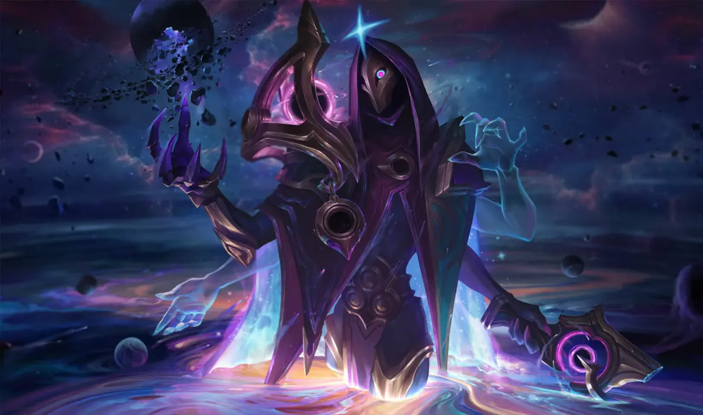

| Campeón | EL ASESINO ARTESANO |
|---|---|
| JHIN |  |
Jhin nacido en jonia mejor conocido como el fetichista del 4, o el asesino de la flor, es un acesino
despediado que para el el arte propio es representarlo de la manenera mas grotesca posible a los humanos
dejando en su cadaver una flor, al ser un acesino en toda runaterra mandaron a varios caza recompensas para atraparlo
pero en el proceso siempre escapaba y nunca fue victoriosa su captura seguiendo con sus acesinatos en toda runaterra.
ROL DE JHIN EN LA GRIETA:
ADC, un campeon de daño fisico en la grieta el cual es demasiado temido por su daño ya que conforme asu lore su fetiche por e nunmero 4
al tener su build completa el cuarto auto ataque hace una cantidad abismal de daño 4444, ya que jhin en su arma solo tiene 4 balas
y al disparar todas tiene que recargar pero su ultima bala hace mas daño, su arsenal consta de primera habildad una bala que salta en 4
objetivos, su segunda habilidad unas trampas que al ser activaddas crea una zona la cual relantiza y hace daño, su tercera habilidad
un disparo que puede estunear asus enemigos, y su definitiva lanza misiles en un radio de triangulo y como sus ataques la 4 bala hace mucho daño.